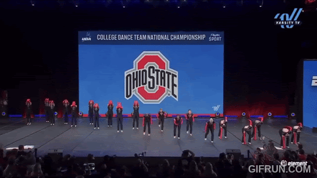

CS184/284A Spring 2025 Final Project Proposal
Title: Animated Dancing
Summary: We aim to create an animated 3D dancer using a min-version of spatial keyframing. Through direct user manipulation and the usage of key poses, we can recreate character motion without the difficulties of real time standard input devices.
Team Members: Cynthia Chen, Karena Chen, Julia Dashzeveg, Steffi Lin
Link to webpage: https://cal-cs184-student.github.io/hw-webpages-karena-c/final/index.html

Problem Description
Animation is traditionally difficult, requiring complex motion-capture setups or extensive manual temporal keyframing. This can be time-consuming as well as resource-exhausting, requiring a lot of technical expertise. We want to dive deeper into looking at ways to simplify the animation process through the usage of spatial keyframing, where we can manipulate a character within the 3D environment itself.
Goals and Deliverables
What We Plan to Deliver:
We aim to deliver a working demonstration of a 3D animated dancer, where we manipulate the character’s body through the space via interpolation between spatial key poses. This would look like a short (~5 second) animation sequence demonstrating a dance routine built with our system. We will measure the quality of the animation with a qualitative assessment of how natural or expressive the dance looks.
What We Hope to Deliver:
We hope to recreate a section of choreography from The Ohio State Jazz Finals 2025 (linked in resources), highlighting a variety of key poses our dancer would be set into. If we manage to finish ahead of schedule, we would also hope to add a basic interface where the user can manipulate the character’s body to implement their own choreography or create a slightly longer animation to include more of the choreography.
Schedule
- 4/4: Project Proposal Due
- 4/6-4/12:
- Research spatial keyframing techniques and review the resources listed below for a deeper understanding of the task ahead
- Set up development environment on VS Code/ VS Studio
- 4/13-4/19:
- Build basic 3D character
- Identify key poses for the dancer, start animating a basic version of the dance sequence using initial keyframes
- 4/20: Graded Milestone Due
- 4/20-4/26:
- Create interpolation between key poses
- Create prototype of dance sequences
- 4/27-5/3:
- Polish output visually and finalize deliverables
- 5/4: Final Deliverable Due
- 5/5: Final Presentation Due
Resources